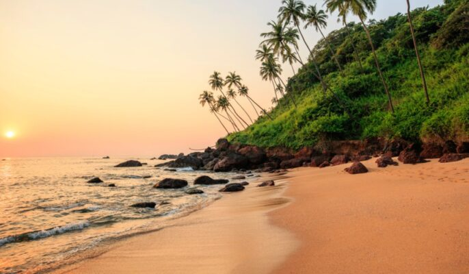

🤩️Goa🤩️
- thriving nightlife and delectable food are the main attractions.
- Its rich flora and fauna owing to its location in the Western Ghats, classified as a biodiversity hotspot, sapphire skies, and golden, palm-fringed beaches make it the supreme holiday destination for domestic and foreign, hippie and high-end tourists alike. But these are not the only things that make Goa unique.
- Goa is one of the smallest states in the country and has well-developed infrastructure, roadways, railways, airport, seaport, high socio-economic indicators, skilled talent etc. that makes the state an ideal destination for investment.
- Goa has the highest GDP per capita among all Indian states, two and a half times as high as the GDP per capita of the country.
- The Eleventh Finance Commission of India named Goa the best-placed state because of its infrastructure, and India’s National Commission on Population rated it as having the best quality of life in India (based on the commission’s “12 Indicators”).
- It is the third-highest ranking among Indian states in human development index.